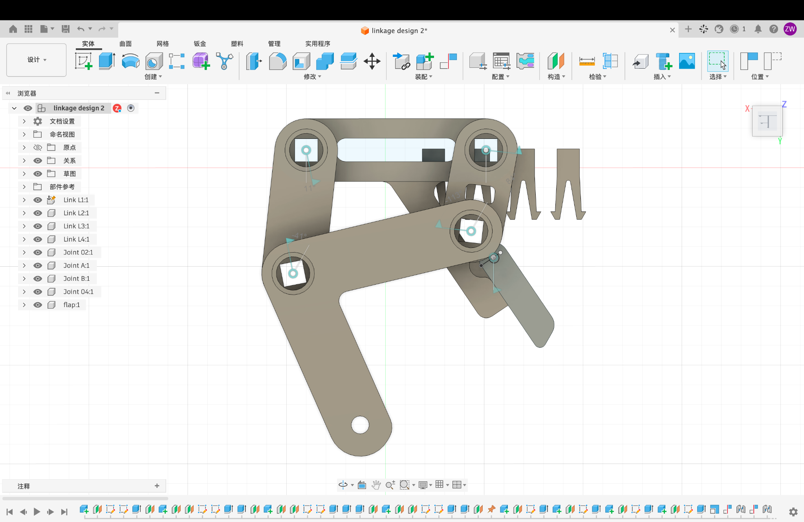

TerraTrek: Development of a
Legged Stair-Climbing Robot
Linkage synthesis, foot-path evaluation, and transition to a motorized walking system
01 Project Overview
Abstract
TerraTrek explores the design of a compact legged robot for stepped and sloped terrain. The course project progresses from a hand-driven mechanism that advances a stair-shaped rack to a self-contained motorized walker with a synchronized secondary agricultural task. The current work examines whether the existing four-bar linkage and extended coupler can be adapted to the second stage. This page documents the available linkage geometry, CAD assembly, and remaining integration questions. A physical demonstration of the manually actuated Project 1 mechanism is included; motorized Project 2 climbing tests remain future work.
Design objective
Develop a repeatable stepping motion while accommodating the robot's size, power, stability, and task-timing constraints.
Scope of this page
The linkage design and CAD shown below form the starting point for continued development. This is a record of work in progress within a team project.
02 Design Requirements
Phase II requirements are summarized from the course project brief [1]. These values are design targets, rather than demonstrated prototype performance.
| Parameter | Requirement |
|---|---|
| Robot envelope | 18 × 18 × 24 cm throughout motion |
| Stair geometry | Rise: 3.7 ± 0.3 cm; run: 8 ± 0.5 cm |
| Ramp slope | Between 1:6 and 1:4 |
| Power input | Provided motor module with integrated batteries; continuous rotation without stalling |
| Secondary motion | One task cycle per stair step, with a transmission element between the leg-driving crank and the secondary mechanism |
| Mechanism restrictions | No isolated simple machines; Klann and Jansen linkages are not permitted |
03 Mechanism & Analysis Methods
3.1 Linkage definition
The current mechanism consists of a ground link, input crank, coupler, and rocker. A point P on the extended coupler defines the foot trajectory. Dimensions below are taken from the current design file [2].
| Element | Notation | Value (mm) |
|---|---|---|
| Ground | O₂–O₄ | 40.000 |
| Input crank | O₂–A | 18.339 |
| Coupler | A–B | 40.724 |
| Rocker | B–O₄ | 27.638 |
| Foot point in coupler frame | P = (x, y) | (34.035, 36.287) |
3.2 Position analysis
For a specified crank angle, point A is calculated from the input rotation. Point B is obtained from the intersection of circles centered at A and O₄, using the coupler and rocker lengths. The local coordinates of P are then rotated and translated into the ground frame.
Here r₁ = O₂O₄, r₂ = O₂A, r₃ = AB, and r₄ = O₄B. The vectors satisfy the four-bar loop closure.
3.3 CAD implementation
The existing Fusion 360 assembly represents the Project 1 link shapes and joint arrangement. It provides a basis for reviewing component packaging and clearances as the motorized system develops.

3.4 CAD motion demonstration
The animation below shows the linkage assembly moving alongside a step-profile rack. It documents the CAD motion study used to examine the mechanism configuration and its relationship to the rack geometry.
04 Current Progress
The available work includes the linkage geometry, CAD motion study, and a physical demonstration of the manually actuated Project 1 prototype. Motorized integration and Project 2 validation remain ongoing.
| Workstream | Available evidence / status |
|---|---|
| Linkage definition | Four-bar dimensions and coupler-point coordinates available in the design file |
| CAD assembly & motion study | Existing Fusion 360 assembly in Figure 3; CAD motion demonstration in Figure 4 |
| Position visualization | Ideal planar model shown in Figure 2 |
| Motor & secondary task integration | Development objectives for Project 2 |
| Project 1 physical prototype | Manual actuation and stair-rack advance demonstrated in Figure 5 |
| Project 2 climbing performance | Motorized robot test results to be added |
4.1 Project 1 prototype demonstration
The physical prototype demonstrates manually actuated linkage motion against the stair-shaped rack. As the input is turned by hand, the mechanism engages the step profile and advances the rack along its guide. This provides a qualitative comparison with the CAD motion study and a starting point for the motorized design.
The recording documents prototype operation. Speed, input force, and repeatability have not been quantified on this page.
Open design question
Can the existing foot trajectory provide sufficient advance and clearance for the required stair geometry while supporting stable body motion? A closed coupler curve alone does not establish successful walking; leg phasing, ground contact, and weight distribution must also be evaluated.
05 Future Work
- Foot-path assessment. Compare usable stroke and clearance with the specified stair rise and run.
- Motor and transmission design. Develop the drive arrangement, assess torque requirements, and establish leg phasing.
- Secondary task integration. Select a task and coordinate its timing with the stepping cycle.
- Prototype validation. Evaluate climbing, lateral drift, stability, and repeatability through physical tests.
This page will be updated with Project 2 prototype photographs, quantitative test data, and design revisions as they become available.
06 References & Project Materials
- Correa, J., and Yim, J. Project TerraTrek. ME 370—Mechanical Design I, University of Illinois Urbana-Champaign, Fall 2026. Course project brief, Phase II.
- design 2.json. Current linkage design file, including link geometry, joints, crank input, and tracer point.
- linkage design 2. Fusion 360 assembly screenshot, October 26, 2026.
- ME370 Linkage CAD Animation.mp4. Supplied CAD motion recording, approximately 33 seconds.
- VID_20261007_175336.mp4. Supplied physical Project 1 prototype demonstration, approximately 9 seconds.
Project context: ME 370 team design work. The interactive figures are explanatory visualizations generated from the supplied geometry; they are not experimental results.